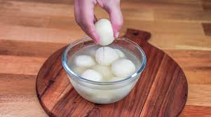

Rasgulla

Description
Rasgulla is a classic Indian dessert originating from the eastern regions of India, particularly West Bengal and Odisha. It consists of soft, spongy balls made from chhena (Indian cottage cheese) and semolina, cooked in a light sugar syrup. These delicate, melt-in-the-mouth sweets are known for their rich, milky flavor and subtle sweetness, making them a favorite during festivals and celebrations.
The preparation of rasgulla involves curdling milk to make chhena, which is then kneaded and shaped into smooth balls. These balls are gently simmered in a sugar syrup until they absorb the sweetness and achieve their characteristic spongy texture. Rasgullas are best served chilled, often garnished with a touch of rose water or cardamom for added aroma and flavor.
Ingredients
- Milk: 1 liter (for making chhena)
- Lemon juice or vinegar: 2-3 tablespoons (for curdling the milk)
- Sugar: 1 cup (for the syrup)
- Water: 4 cups (for the syrup)
- Semolina (sooji): 1 teaspoon (optional, for binding)
Steps
- Prepare the Chhena:Boil milk in a pot. Once it starts boiling, add lemon juice or vinegar to curdle the milk.
Strain the curdled milk using a muslin cloth to separate the chhena. Rinse the chhena under cold water to remove the acidic taste and squeeze out excess water.
- Knead the Chhena:Transfer the chhena to a plate and knead it with your palms for 5-7 minutes until it becomes smooth and soft. Optionally, add semolina and knead it in.
- Shape the Rasgullas:Divide the kneaded chhena into small portions and roll them into smooth, crack-free balls.
- Prepare the Sugar Syrup:In a large pot, combine sugar and water. Bring it to a boil and let the sugar dissolve completely.
- Cook the Rasgullas:Gently add the chhena balls into the boiling sugar syrup. Cover the pot and cook on medium heat for about 15-20 minutes, ensuring the balls have enough space to expand. The rasgullas will double in size and become spongy. Let them cool in the syrup before serving.